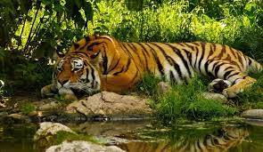

KOYNA WILDLIFE
SANCTUARY


The Koyna Wildlife Sanctuary is a captivating haven for wildlife situated in the Western Ghats of Maharashtra, India. Spanning over an area of approximately 423 square kilometers, this sanctuary is nestled amidst lush greenery, scenic hills, and pristine rivers. Established in 1985, it encompasses diverse ecosystems, including dense forests, grasslands, and water bodies, making it an ideal habitat for a wide variety of plant and animal species. The sanctuary is particularly renowned for its significant tiger population and is an essential part of the Sahyadri Tiger Reserve. Apart from tigers, the sanctuary is home to other iconic wildlife species like leopards, Indian bison (gaur), sambar deer, wild boars, and various species of birds and reptiles. The Koyna Dam, one of the largest dams in Maharashtra, also enhances the charm of this sanctuary.
How to reach